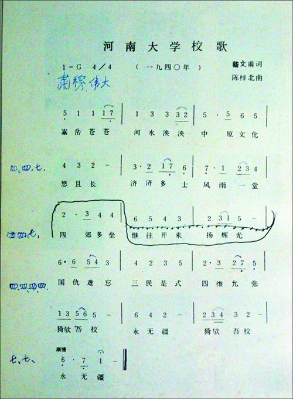
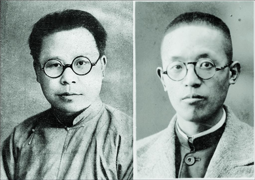
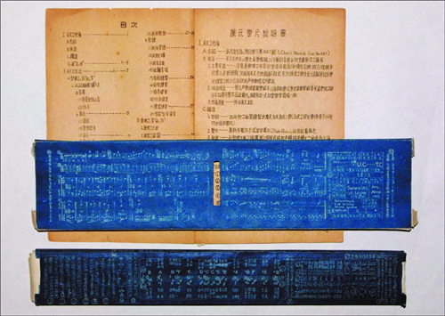

河南大学校歌及其作者
发布时间：2020-06-15 16:05:11 作者：时勇
 时任文学院院长的嵇文甫（左）先生、教育系教授陈梓北（右）
校歌是一所学校师生众望所归的灵魂家园，也是时代精神的折射。在河南大学百年建校的历史进程中，曾响彻过三种不同版本的“校歌”。第一种是建校之初，预校时期英文版的《母校之歌》（ALMA-MATER），当时只是朗诵，没有谱曲；第二种是1940年抗战时期的《母校校歌》，嵇文甫作词，陈梓北谱曲；第三种是1992年庆祝建校80周年时，新作的《河南大学校歌》，张予林作词、张彬谱曲。后一种没能普及，2002年九十年校庆时，学校决定恢复使用1940年的《母校校歌》为《河南大学校歌》（见图一：八十年校庆后陈梓北收藏并修改过的《河南大学校歌》）。并根据时代发展，将原歌词中的“三民”与“四维”改作“民主”与“科学”。从此，《河南大学校歌》在师生中再次广为传唱，成为河大人“继往开来”，再创辉煌的战斗号角。
这首传唱至今的校歌，歌词为“嵩岳苍苍，河水泱泱，中原文化悠且长。济济多士，风雨一堂，继往开来扬辉光。四郊多垒，国仇难忘，民主是式，科学允张，猗欤吾校永无疆”。作者是著名史学家、文学家和哲学家，时任文学院院长的嵇文甫（见图二左）先生。他还创作了《献给祖国》、《走出象牙之塔》、《抗战到底》等激情奔放的歌曲。嵇文甫（1895～1963），河南汲县人。1919年毕业于北京大学哲学系。1926～1928年在苏联留学，归国后历任北京大学、清华大学、燕京大学讲师、副教授。1933年应聘为河南大学教授，后相继担任河南大学文史系主任、文学院院长，中原大学筹备委员会副主任委员，河南大学副校长。1950年4月当选为河南省人民政府副主席，以后又转任河南省副省长。他在河南大学执教23年（其中担任校长5年），是当时河南省惟一的一位中国科学院学部委员。他的经历以及在河南大学的成就与贡献，在《河南大学校史》中有多处详细记载，这里就不再赘述了。
校歌的曲调，如今已深深印在每位河大校友心中。不用发出几个音符，大家就能够听出是校歌的音乐。他的谱写者却不如歌声那么被人熟知。他是当年教育系教授陈梓北（见图二右）。陈梓北（1905～2001），山东黄县人。1930年毕业于北京师范大学教育系，在开封一师等校任教5年。1935年到日本东京帝国大学留学，攻读教育科研究生，1937年七七事变后愤然回国。1940年8月到河南大学教育系任教授直至逝世。《河南大学校歌》是他刚刚回国之后，怀着抗日救亡的满腔热忱和对祖国、对母校的热爱谱写出来的。同期还编写《抗战歌曲选》、《战教周刊》，并为《“七七”中学校歌》、《纪念鲁迅歌》、《远征进行曲》等谱曲。1951年陈梓北先生加入民盟，1984年加入中国共产党。他主讲本科生、研究生的教育统计学和小学教材教法、教育学等课程，在国内小学数学教材教法领域独树一帜。长期深入小学进行“三算”(珠算、笔算、心算)研究。在“珠算”、“三算”、“珠心算”、“脑珠算”等计算技术的研究中处世界领先地位，其成果受到日本、韩国、墨西哥专家的高度评价。著有《丹麦教育》、《基本珠算讲解教程》、《珠算速成简明教程》等书。陈梓北是中国珠算协会的创始人，曾担任中国珠协副会长、《珠算》杂志顾问等职。
然而，这样一位在教育统计、心算、珠算等诸多方面颇有建树的专家，却还精通乐理，善于谱曲。抗战时期，在潭头的深山沟里，他精心研制教具，甚至发明出了全国首创的作曲工具———987型《陈氏乐尺》（见图三：陈氏乐尺及说明书），用于中小学音乐教师，以及爱好音乐与研究音乐者应用。它“可将难解、难记，苦于练习之部分变成易解易记而乐于练习之部分，在进研和声作曲时尤多便利”（《陈氏乐尺说明书》）。这把乐尺当时还被国民政府教育部认可，终因时局动荡而未能投入生产。据我校艺术学院琚清林教授讲：“陈氏乐尺是乐理的高度浓缩，精通乐理的老师用陈氏乐尺，一周可将一年的乐理课教完。”1992年，笔者到校南门外教授院陈老家中采访时，才第一次见到这把尘封半个多世纪，从未离开过陈老的乐尺。
笔者在校园中与大家同唱校歌近三十年，虽然不曾聆听过词作者嵇文甫先生的当面教诲，但那铿锵有力的歌词，却是我最熟悉、最有亲切感的诗句。我还与曲作者陈梓北先生有过多年的往来。图一、图三都是在陈老家采访时拍下的。两位先生虽已去多年，但他们不同时期的容貌和众多老校友一样，都清晰地刻印在我的脑海中。他们留下的校歌，更是成为了所有河大人的心声。